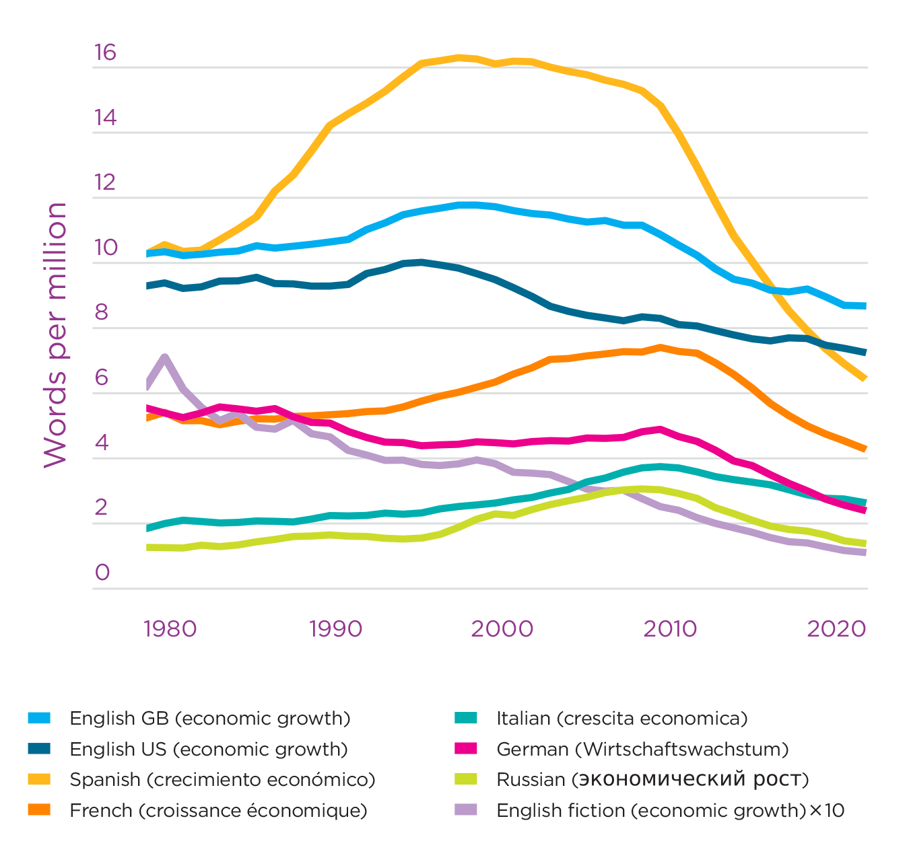

Trends in Conceptions of Progress and Well-being
Introduction
Is interest in happiness growing? The World Happiness Report exists because of the deep idea that individuals are able to report their subjective experience in a way which can meaningfully guide individuals and societies towards better lives. The first part of this idea, to do with measurement, requires extensive, widespread collection of happiness data over decades, as well as the research that takes us from raw data to understanding differences and changes in happiness across individuals and countries.
Equally important as that base of evidence about well-being, needed by policy wonks and scientists, is the narrative change that is key for society to begin to privilege human experience in its conception of progress. This chapter explores this latter subject: to what extent is the public and popular narrative about well-being and progress shifting towards a modern, happiness-oriented view of human experience? While the recent pandemic has likely had a strong impact on popular conceptions of what is most important for a good life, and indeed on how society can foster collective improvements to well-being, the sections below review evidence for broader trends towards associating happiness with progress.
Such changes could manifest themselves in public and social discourse, in published literature such as books, in research articles, and in government initiatives. Sections below will examine the last three of these, including a survey of indicators of progress and well-being that reflects the ideas of organizations, researchers, and government at all levels. This tour starts by looking at the changing use of “happiness” and related terms in books, finding that there is increasing attention to this topic across multiple languages.
In recent years, more and more of the books that get published are academic, so the subsequent section looks at trends in academic research on happiness, with a particular focus on research articles published in economics, a field which specializes in devising policies to improve overall human welfare. The evidence to be found there is somewhat nuanced. While there has been more than a 10-fold increase in research output on happiness since the turn of the century, there may also be something holding back the work in recent years.
The recent pandemic has likely had a strong impact on popular conceptions of what is most important for a good life, and indeed on how society can foster collective improvements to well-being.
Ultimately, if the vast amount of data and analysis in that field is providing valuable knowledge about how to measure and improve world happiness, we should expect to see an evolution in the design of indicators of well-being and progress around the world. Section 4 addresses this question, using a newly expanded database of more than 150 efforts to define and measure progress.
The largest share of those indicators is devised by governments themselves, so Section 5 examines a number of recent examples of central governments reorienting their policy-making and measurement systems towards happiness. In the final sections, I describe three crucial challenges faced by these government efforts to measure progress and well-being and to devise new ways to inform policy-making using the science of happiness. They arise from the following question: Can a single number or index capture society’s well-being or goals, sufficiently to guide all policy decisions? This idea is still seductive, just as it was to the early utilitarians. The three challenges relate to: handling distributions and inequality, simplifying multiple dimensions down to a single index, and treating sustainability within happiness-oriented indicators. The current trajectories of government efforts in happiness policy suggest trouble ahead if these conceptual issues are not taken on carefully.
International language around happiness
Google Books’ “Ngram” database records the frequency of occurrence of all short phrases in published books.[1] By comparing how often a word or phrase related to the science of well-being occurs in printed text, the database can paint a picture of how the interest in happiness and the discourse around measuring well-being are changing over time.
Figure 3.1 shows trends in the frequency of appearance of several words and phrases related to the evaluation of progress and wellbeing. The frequencies are from books published between 1995 and 2019. It is worth noting that the database ends prior to the pandemic, so the trends described below do not reflect any additional shifts in language use and focus which may have happened during the pandemic.
The word “happiness” accounts for more than 25 out of each million words in print.[2] Since 2013, this word has occurred more frequently than the phrase “gross domestic product” (GDP), an older marker of progress, which has been declining in frequency of usage since 2010.
The terms “life satisfaction” and “subjective well-being” occur much less frequently than “happiness,” but have also been rising steadily for more than two decades. Since 1995, the frequency of use of “happiness,” as a fraction of all text in books, has more than doubled, while that of “subjective well-being” has increased by a factor of eight.
By contrast, the word “income” is, like GDP, on a multi-decade trend of decreasing use, having peaked around 1980 and having halved in relative usage since 1995. The phrases “beyond GDP” and “genuine progress indicator” (GPI), which are also representative of newer thought in the measurement of well-being and progress, have grown enormously — each by a factor of six or more — since 1995, and use of the former, at least, is still increasing. The term “economics of happiness,” to which I will return in subsequent sections, is another new phrase whose use has grown since its inception this century, although the data show that it may have peaked in 2017.
Figure 3.1: Recent trends in some well-being-related phrases
Note: Recent trends in some wellbeing-related phrases. Data are based on the 2019 English version of Google’s Ngram database, and smoothed using an exponentially-weighted kernel with an 11-year span. Plots show the growth or decline in the relative incidence of “happiness” and other phrases since 1995, measured as frequency per million words. For visibility, some frequencies in the plot on the left are scaled up, as noted in the legend for each line, and phrases with even smaller frequencies are plotted separately on the right with a vertical scale 1000 times smaller. Alternative arrangements of this figure are available in Appendix 3.
Together, these trends paint a tentative picture of an increasing interest in new and subjective measures of well-being and a waning focus on income and production. These trends clearly predate the influence of the first World Happiness Report in 2012. However, as Figure 3.1 shows, mentions of the Report in books have grown rapidly in frequency since then, and are now twice as numerous as the use of the term “Beyond GDP.” In 2019, “World Happiness Report” accounts for 1 in 1000 among all appearances of the word “happiness.”
A strength of the Ngram database is that it sources information from several corpora in different languages, which provide both a more international view as well as some assurance that observed trends are not spurious or idiosyncratic to one language, but rather represent a reproducible measure of widespread changes in interest in a concept.
To give this broader view, the next few figures, including several in Appendix 3, show a slightly longer period and address the question of consistency across different languages and sets of text. Not only are Google Ngrams compiled for Chinese, Spanish, Russian, French, German, and Italian, but three variants are available for English: all UK-published books, all US-published books, and books of fiction. This is useful because part of the enormous rise in the volume of published books in recent decades is due to an overall increase in academic writing in book form. Separating the content in fictional stories serves to check that the observed trends are a broad cultural-linguistic pattern, rather than changes confined to the research community.
We see in Figure 3.2 that the rise in the use of “happiness” is a consistent phenomenon across all the languages shown, with a possible exception of the final two years (2018-2019) in Chinese. The trend is less pronounced in the corpus of fiction, but in recent years even fiction has an increasing focus on happiness.
Figure 3.2: Frequency of occurrence of “happiness” across languages
Notes: Frequency of occurrence of “happiness” across languages. Data are from Google Books’ ngram database and have been smoothed to remove short-term fluctuations. Translations of “happiness” used for each language are shown in the legend. The vertical scale shows the frequency of occurrence of the word “happiness” as a fraction of all words in printed books.
The Google ngrams database only includes phrases when they are found at least 40 times for a given language. In Appendix 3, Fig. S3 shows that while no translations of the title were found to be sufficiently common, World Happiness Report has occurred in its English form in four other languages. The steep rise in mentions of the Report in English have also occurred in Italian, German, Spanish, and French, and to comparable frequencies, albeit with slower starts than in English.
Turning to a phrase with waning popularity, Figure 3.3 confirms the decreasing frequency of references to “economic growth” across languages. This decline is evident since 2008 or earlier in each language, and over several decades in the case of English fiction. Fig. S4 in Appendix 3 shows similar patterns for “income” and “GDP” across a number of languages, with Chinese and possibly Italian being exceptions. Overall, interest in income generally peaked at different times in the middle and late 20th century, while interest in GDP and economic growth has come down only since the turn of the 21st century. In Chinese text, use of the term “GDP” in its English form has been increasing during this entire period and, remarkably, now constitutes a larger fraction of Chinese text than it ever did in any of the other languages.
Figure 3.3: Frequency of occurrence of “economic growth” across languages

Notes: Frequency of occurrence of “economic growth” across languages. The format is as for Figure 3.2 and shows that the recent decline in the relative frequency of mention of economic growth in published books is a common feature of the data in all available languages.
By contrast, translations of the term “beyond GDP,” which were found in two languages besides English, in all cases show rising interest (see Fig. S4 in Appendix 3). The term’s popularity appears to have begun slightly before the prominent high-level conference “Beyond GDP” in 2007, hosted by the European Commission, European Parliament, Club of Rome, OECD and WWF. Two years later, the Stiglitz-Sen-Fitoussi Commission, a milestone in the “beyond GDP” movement, began the opening paragraph of its report with the words “gross domestic product.” The paragraph explains:
Too much emphasis on GDP as the unique benchmark can lead to misleading indications about how well-off people are and run the risk of leading to the wrong policy decisions. The purpose of this chapter is to go beyond GDP in our quest for better economic measures of living standards.
The report had an important role in the rise of happiness as a valid and meaningful element of national accounting, and it continues to frame recent efforts, particularly by the OECD, to measure well-being. Overall, then, tracking the use of these key phrases across multiple languages captures a broad sense that discourse around progress may be changing.
Of course, “happiness” is used in informal contexts. We can look at terminology more specifically related to the measurement and pursuit of well-being to gauge the growth of interest in specific empirically-based approaches to human happiness. Fig. S5 in Appendix 3 shows trends for “subjective well-being,” “life satisfaction,” and “positive psychology.” In these we notice the same pattern of increasing trends, overall, even though these technical terms do not appear (“subjective well-being”) or do not increase (“life satisfaction” and “positive psychology”) in the English Fiction corpus.
Interestingly, “quality of life,” another important phrase in English used to capture a sense of well-being related to overall cognitive and affective human experience, has been relatively popular in several languages but is no longer growing in use (see Fig. S6 in Appendix 3). Because this term is important in policy circles, I will return to it below.
Trends in the academic literature on happiness
The subsequent section of this chapter provides an investigation into the evolution of quantitative approaches to measurement of progress and well-being as conceived by communities, academics, and governments. As a prelude to that examination and as a complement to the preceding look at language use overall, this section investigates trends in the attention given by academic researchers to measuring and understanding happiness.
For this purpose I appeal to the Web of Science’s database on more than 50 million journal articles.[3] The contemporary context for any analysis of academic output is that, overall, the rate of academic publication is growing at an explosive 5.5% per year, more than five times the human population growth rate and amounting to a tripling since the turn of the 21st century. In this landscape, the rate of production of journal articles with titles or abstracts containing “happiness”, “life satisfaction,” “satisfaction with life”, or “subjective well(-)being” has grown by a factor of ten since just 2003, recently totaling more than 4000 per year. Scaling this rate by the overall publication volume gives the fraction of papers that are related to happiness. Figure 3.4 shows how this fraction has changed over time. Prior to the early 1970s, there were essentially no papers using these terms. In the 1990s, 0.03%, and more recently about 0.2% of all research papers refer to these ideas. The figure also shows the evolving fractions for the subset of research articles classified in Web of Science’s “multidisciplinary psychology” subject category and in its “economics” category. Overall, the economics category is larger but the psychology field has, not surprisingly, a larger fraction of happiness-related publications. Moreover, the attention to happiness began about 15 years earlier in the psychological sciences than in economics, where, other than a few isolated papers in the 1970s and 1980s, interest grew substantially only starting in the mid-1990s.
Below I turn the focus on academic publications to economics because, although there are more publications in psychological and psychiatric journals, it is the economics literature which tends to focus more on conditions which make one country happier than another. To give some further context to the trends just described, Fig. S7 in Appendix 3 shows several other features of economics publications since 1980. First, happiness is not the only topic gaining interest. “Sustainability” is found in a growing share of the titles and abstracts of work over the last two decades, appearing in 2% of economics publications, while the happiness phrases appear in 0.6%. Both “income” and “inequality” have maintained their order-of-magnitude-higher incidences above that of “happiness” and, moreover, have begun to increase in relative frequency in recent years.
Figure 3.4: Fraction of academic papers related to happiness
Notes: Fraction of academic papers related to happiness. Publication rates are shown relative to their respective denominators. The dots show years in which only one or two articles were published. The criterion for being related to happiness is that the title or abstract of a journal article contains any of “happiness”, “life satisfaction,” “satisfaction with life”, or “subjective well(-)being.” In 2021, the raw numbers of publications related to happiness were 4217 in all fields, 682 in psychology, and 212 in economics. Data come from the Web of Science.
A more subtle feature to glean from Fig. S7 is that since 2010, happiness-related publications have grown less quickly in economics than in other fields. Even more interestingly, restricting the scope of search to the most prominent journals in economics shows that, if anything, the interest in happiness there has peaked. The blue line in Fig. S7 shows the relative frequency of articles in the top 20 economics journals,[4] while the orange one shows publications in the canonical “Top Five” most prestigious economics journals. In both cases, the interest evident prior to 2010 has not been sustained. How should one interpret this discrepancy? Why have the top journals not followed the broader trend in economics and other fields? One possibility is that many of the easy questions about the causes and distribution of happiness may have been answered early on, leaving fewer ground-breaking findings or applications of novel methods to be taken up by the most choosy journals. Another explanation might be that the implications of happiness economics are too great to be easily adopted into most frontier work in the field. After four decades of the “economics of happiness,” the methods and findings are accepted within economics but are still not emphasized in teaching and training, and have for some reason not transformed the focus of economic welfare analysis or discussion of policy implications in the vast majority of research within the discipline.
The last point to be made from Fig. S7 is that the relative frequency of mention of “policy” in economics articles which treat happiness is rising faster than the overall rise in happiness research. I will return below to themes raised by the evident importance of inequality, sustainability, and policy in the publication record.
One last plot on this subject reveals something further about trends in discourse and academic thought. Restricted now not just to publications in economics, but to those articles within economics which make reference to the happiness-related terms mentioned above, Figure 3.5 shows the relative frequency of appearance of certain specific language in titles and abstracts. Most notable is that the use of the word “happiness” itself is in decline. In its stead, both “subjective” and “life satisfaction” are increasingly used. These are more technical and precise terms than “happiness,” the way it is usually used. Their use likely reflects the increasing familiarity and sophistication of economists with subjective well-being measures.
Figure 3.5: Trends within happiness-related publications in economics
Notes: Trends within happiness-related publications in economics. Within the set of economics journal articles containing any of “happiness”, “life satisfaction,” “satisfaction with life”, or “subjective well(-)being” in the title or abstract, the plot shows the fraction which contain each word or phrase shown in the legend. “SWB” corresponds to “subjective well-being” or “subjective wellbeing”, while “LS” indicates that the title or abstract mentions “life satisfaction” and/or “satisfaction with life.” In general, the data, taken from the Web of Science, show that the non-specific term “happiness” is being replaced by references to more specific kinds of measurements. Also, discussion of policy is becoming more frequent in research papers on happiness.
I now turn to a different and crucial dimension of the expansion of research relevant to the World Happiness Report. Figure 3.6 shows the spread of work — again related to the number of economics-related journal articles referring to “happiness”, “life satisfaction,” “satisfaction with life”, or “subjective well(-)being” — around the world since the earliest ones in the 1970s.[5] The rates show happiness-related authorship as a proportion of each country’s total population. The first panel shows a period of 25 years, over which the most prolific country produced only 11 research papers containing one of these terms in its title or abstract. This amounts to 0.3 per ten million population. The subsequent panels show successive periods of 5 or 6 years each, during which research on happiness grows from just a few countries — notably in North America, western Europe, and Australia — to a much more global endeavor. While publication is still partly dominated by the early contributors to the field, China now ranks third in output, with Turkey, Slovakia, South Korea, India, and Taiwan also in the top 20 (see Table1 in Appendix 3). World happiness is now studied worldwide.
Figure 3.6: Internationalization of academic research on happiness, as measured by authorship per capita. 1970 - 2021
Figure 3.6 (timelapse)
Notes: Internationalization of academic research on happiness, as measured by authorship per capita. Each map shows the number of authors of happiness-related research articles per ten million population, during the periods shown.
Research on happiness [has grown] from just a few countries — notably in North America, western Europe, and Australia — to a much more global endeavor.
Indicator systems for measuring progress and well-being
After ten years of the World Happiness Report, some aspects of happiness research have become common knowledge. Popular press annually report which are the happiest countries. The modern availability of happiness data across diverse populations and over time is one of the important factors that is shaping thinking about human progress. So are the increased availability of other statistical measures known to be important supports for happiness, the growing scientific understanding of how human subjective experience relates to those supports and to life circumstances and practices, and indeed, an increased public appetite for and acceptance of statistical information.
Recent, influential works of scholarship have also affected beliefs about economic growth and inequality, as have a parade of disruptions to the lives — and assumptions — of even those who are relatively content. These include the financial crisis, the COVID-19 pandemic, and disruptions from a changing climate. The widespread growth of inequalities not well counted by traditional measures of economic performance is not new, but an increased recognition that environmental degradation threatens the predictability of future welfare is.
In light of these ongoing trends, what do individuals, organizations, local governments, central governments, and international agencies come up with when they follow the natural instinct to gauge progress and merit? This section reports on the content of indicators which are intended to capture the broadest conceptions of human social progress. The underlying database, “Measuring progress and well-being” (MPWB), has been updated from its 2016 version,[6] doubling in size to 166 projects. Each project, or indicator system, is an attempt to capture well-being and progress in a coherent and measurable way, but each also serves to advocate for its particular way of doing so. These efforts to forge new indicators are therefore a representation of how we might conceive of and pursue well-being and progress in the future.
Indicator projects are eligible for inclusion in the MPWB database if their intent is to capture the idea of overarching progress for the entire population. Nevertheless, due to differences in proponents’ assumptions and approach, indicators reflect a variety of conceptually different rationales. These include concepts of economic development, generalized wealth, life quality, social development, progress, happiness, and sustainability.
For continuity with the tracking of words and phrases in the preceding sections, Fig. S8 in Appendix 3 shows trends in the language content of indicators in the MPWB database. In each plot, lines show the cumulative number of indicators over time containing each phrase, while the black notches show the dates of creation for all 166 indicators.
The first graph relates to how indicators are named. “Quality of life” and “well-being” and “progress” have been prominent in the titles given by the creators of indicators since the earliest entries in the database. By contrast, the word “happiness” itself did not appear prior to 2003 but since then has appeared in the names of over a dozen new indicator projects.
Also shown in Fig. S8 in Appendix 3 are the occurrence of words in the rationales given (usually by the creators) for the creation of each indicator, and for the selection of its constituent measures. Nearly a third of indicators to date explain their purpose by making reference to “quality of life”, and the same is true of “well-being.” “Progress”, “sustainability,” “happiness,” and words related to subjective well-being and satisfaction also feature prominently. The steepness of each line reflects how many new indicators referencing each phrase were created in a given year.
When it comes to describing the thematic or specific content of indicators, however, “income” outranks subjective well-being, even in recently-created indicator systems.
Although the verbal analysis given above is carried out in English, the database includes translated descriptions and rationale for indicators from around the world. In Appendix 3, Fig. S10 shows the global distribution of indicators. Because of the number of indicators with global scope, all countries are now covered by at least 8 schemes. Some of those cover a particular region of the world, while some apply to a particular country. Also shown are a number of cities with their own local indicator systems for well-being or progress. The second map in Fig. S10 shows the coverage of indicator systems which mention happiness or subjective measures in their descriptions or rationale. These amount to 40% of all the indicators in the database.
Combined with the global spread of happiness research shown earlier, this map suggests that the desire for new measures of policy success and human thriving is a worldwide phenomenon, and that the subjective well-being approach holds growing sway around the world.
Who defines “quality of life”?
Creating and promoting new indicators is one part of shifting societies’ values and conceptions around measured happiness, leading to new expectations for progress and good policy. Along that path, however, that which is actually measured, policy that is made, and intellectual ideas that gain attention must all pull each other along with those public expectations. The design of indicator frameworks is driven in part by what measurements are available, but that availability was in turn driven by what held people’s attention and interest in the preceding years. Without embracing any particular theory of change, and having seen that these shifts are underway as a geographically broad trend around the world, one might ask who is designing new measures of progress and well-being?
In Appendix 3, Fig. S11 shows the geographic distribution of indicators in the MPWB database according to whether they were formulated by academics, governments, or other organizations. The distributions in these maps look different than in the maps of Fig. S10. Academically-designed indicators tend to be overwhelmingly focused on the USA and China, while non-government organizations have been most active in Canada and the USA. In any case, with the exception of those focused on the USA and France, most new indicators around the world were devised by governments themselves or by inter-governmental agencies.
Has that pattern changed over time? The grouped bars in Appendix 3, Fig. S12 show the decadal distributions of designer categories. The thicker lines show the number of ongoing indicators over time — that is, taking into account both newly created additions as well as attrition due to indicator frameworks falling out of use. According to the MPWB database, academics did not get into the game until 1995, after which they have contributed a growing fraction of new indicator designs. However, their indicators have had less staying power, with less than a third of indicators created since 1995 still in use. Privately-created indicator systems are more numerous and were more successful, at least until about 2001. Altogether a little more than half of them are still in use. Over the last decade, though, the rate at which privately-created indicators are being retired has been similar to the rate at which new ones are proposed. Although governments are subject to political cycles and platform changes, only government-created indicators appear to have staying power, with more than two thirds of those created still in use.[7] For these reasons, in recent years the number of extant government-created progress and well-being indicators is growing both in absolute terms and relative to the other categories.
The originator — whether an individual or an institution — of an indicator framework is not the only one involved in defining quality of life, progress, or well-being or in devising the structure of the framework. The method used to choose a design typically involves either the public, through a consultative process, or expert advice or, in a few cases, principled use of data to drive the design. These may be named “bottom-up,” “top-down,” and “empirical” approaches.[8]
A prominent example of a method classified as bottom-up is the 2010-2011 effort by the U.K. Office of National Statistics (ONS) to construct a national consensus definition of “national well-being,” under a new objective to “Measure what matters.” The ONS organized in-person discussions around the country, extensive online debates, and venues for comment submissions, in order to solicit opinions from the population about what is important in life, how to measure national well-being, and how to use such a measure. The results were formed into an indicator framework comprising 10 domains and 38 individual measures.[9] A top-down approach, by contrast, would have reached the set of domains and indicators based on academic thought, experts’ opinions, or political priorities.
Fig. S13 in Appendix 3 shows the evolving proportions of approaches across all three categories, along with one in which expert judgment or principled choices are followed up with a more democratic process for selection or refinement of the indicator framework. The top-down and mixed approaches dominate among the indicators in the MPWB, and there is no obvious pattern of shifting tendencies over time, except for the recent rise of the “empirical” category. Interestingly, academic originators of indicator projects tend to prefer top-down approaches, using them 80% of the time, often based on some theoretical idea or principle, yet they are also the most likely to create an empirically-derived indicator.
One approach for empirically deriving indicators of well-being and progress is to use happiness data to choose weights for other, objectively-measured supports to well-being. As discussed later in this chapter, this may be the most defensible approach for constructing new indices.
Government conceptions of progress and well-being
Well-being and progress indicator initiatives which provide public information for wide audiences may have some role in shifting public expectations and priorities. A more tangible mark of effectiveness, and of change, is for those indicators to have a role in policy. As shown above, it is also governments which have taken and are expanding the lead in formulating new ways to express and formalize social priorities using measurable indicators. This section presents a few specific examples of the kind of language being used in government initiatives to turn towards evidence about happiness.
The Nordic Council of Ministers in 2021 classified government well-being initiatives by whether they use well-being metrics for monitoring, for prioritizing, or for policy making.[10] A new piece of language that they see as synonymous with a “beyond-GDP approach” is a “well-being economy,” a term which first appears in Google Books’ Ngrams in 2001 and relates to the second and third uses of well-being metrics, just mentioned. That is, a country is considered a Wellbeing Economy only if it actively uses well-being measures for informing government priorities and “actively [guiding] government policymaking towards the most well-being impact.” While this leaves wide open the definition of well-being, and while they state that well-being economies are varied in their use of subjective versus objective measures of well-being, “it is the adoption of [subjective] well-being measures [like satisfaction with life] by states, policymakers, and other members of the international community that are today paving the way towards the concept now known as the Wellbeing Economy.”[11]
The Nordic Council of Ministers identifies three countries — Bhutan, United Kingdom, and New Zealand — as governments which use well-being metrics in all three roles: monitoring, prioritizing, and policy making. In fact, New Zealand has for three years branded its budget as a “well-being budget.” In its 2021 edition, the budget’s second page is entirely devoted to reporting statistics of happiness (life satisfaction). Interestingly, however, life satisfaction does not yet have any formal role in New Zealand’s budgeting process or well-being objectives, beyond the mention of “mental well-being.” One key feature of the New Zealand approach is that it is explicitly under active development. Two frameworks, the “Living Standards Framework” and a newer Māori approach (He Ara Waiora, or “healthy path”), are still evolving towards being more specifically able to guide policy.
Similarly, the Canadian federal government has taken an evolutionary approach to developing its new well-being framework in 2021, which it dubs a Quality of Life Strategy. Canada’s Finance Department released a version of this framework in 2021, writing:[12]
Self-reported life satisfaction is a measure of SWB that directly gauges overall, experienced quality of life, providing information that cannot be gathered in any other way. Life satisfaction has been the primary measure of SWB in the literature, understood as an evaluative and overarching assessment of the state of one’s own life.
For its new measurement framework, it proposes that one option would be to include life satisfaction “as an overarching indicator to complement several key domain-specific indicators in providing a high-level assessment of overall quality of life in Canada.”[13] They recognize that using happiness as a headline indicator of well-being would help to communicate that the government cares about the subjective experiences of its citizens as a central goal. They also mention that it could inform priority setting or budget allocation decisions and support cost-benefit analysis, in line with the second and third roles described by the Nordic Council of Ministers.
Furthest along of all in those roles is probably the United Kingdom government. Three noteworthy documents were published in 2021: the autumn budget, an official “Green Book” supplement on using a well-being approach in cost-benefit assessment, and a discussion paper providing further details on the latter topic. The budget uses the word well-being several times in phrases conveying the objective of policy, such as “health, prosperity, and well-being,” “people’s well-being, wages, and prospects,” “young people’s well-being and prospects,” “health, well-being, and opportunities,” and “economies, livelihoods, and well-being.” As in the case of New Zealand’s budget, the U.K.'s mentions life satisfaction in the context of measured inequality, referring to “inequalities in wages, life satisfaction, and productivity.”
An interesting observation is that neither the New Zealand or Canada documents mentioned so far, nor the U.K. budget, use the word “happiness.” This mirrors the growing preference, mentioned earlier in regard to the academic literature, for more precise terms denoting specific subjective well-being questions. Such specificity would however contrast heavily with the broad and typically poorly defined meaning of the term “well-being” and “quality of life” in these same documents. On this point, the U.K. stands out sharply. The first part of the first section of the Green Book supplement is entitled “What is well-being?” and begins with the simple sentence “Wellbeing is about how people feel.”[14] It goes on to mention that “personal well-being is measured by the Office of National Statistics through subjective reports of satisfaction, purpose, happiness and anxiety.” The step of openly embracing subjective well-being as a formal and core objective of government policy has been many years in the making in the U.K., but it should be seen nevertheless as a landmark point of evolution in 2021.
The remainder of the Green Book supplement buttresses this view. As well as summarizing happiness research findings, it explains quantitative methods for using happiness data to make decisions about government spending. There is no ambiguity about the role of subjective well-being or life satisfaction in this document, nor in the accompanying U.K. Treasury background paper, which gives more technical detail on cost-benefit calculations when life satisfaction is the explicit outcome measure.[15] Of course, the next step will be for these guidelines to influence actual practise.
Interestingly, while the central role of subjective measures is clear, the Green Book supplement does go on to use the word “well-being” to refer also to an open-ended list of desirable outcomes. Bridging earlier language used by the U.K. Office of National Statistics, it mentions ten “dimensions of well-being” such as health, relationships, where we live, and so on, and refers to these as “national well-being.” The analysis it prescribes, however, is largely about valuing these “national well-being” dimensions and outcomes using evidence from their effects on “personal well-being,” i.e., happiness.
Reflecting on the history and the landscape of existing government language and conception around well-being and progress, it appears that the flexibly-defined language around “well-being” and “quality of life” serves as a rhetorical and conceptual gateway to recognizing happiness as an important or even central policy outcome, and to incorporating happiness data and insights into policy formation.
In all three country examples mentioned above, the Treasury or Department of Finance has taken the lead in embracing new conceptions of progress and well-being. However, the same language is visible in other domains where expertise, training, and practice require a shift to reorient towards promoting overall happiness. One example is from the U.K. “Policy Profession Standards,” which gives official guidance for recruitment, performance assessment and training of 14,000 policy staff.[16] Updated in November 2021, it now subtly but importantly includes “well-being” as an example of a cross-cutting policy objective. A more prominent example comes from the Geneva Charter for Wellbeing, a product of the World Health Organization’s 10th Global Conference on Health Promotion in December 2021, at which over 5000 representatives from 149 countries participated.[17] The Charter makes reference to creating “well-being societies,” which seemingly have features in common with “well-being economies,” mentioned above, and would be characterized by a more “positive vision of health” including “social well-being”, and “new indicators of success beyond GDP that … lead to new priorities for public spending.” While naturally featuring nonspecific language, this document will undoubtedly influence conversations and conceptions in the enormous public health communities and agencies around the world.
Three challenges
This chapter concludes with three warnings about challenges faced when forging new conceptions of, or measures of, progress and well-being. They arise in most of the government initiatives just described, and in many of the indicator initiatives in the MPWB database. The warnings are to avoid pitfalls with the construction of indices that sum across different domains, that sum across people, or that address both current outcomes and ones in the far future.
Indices and aggregation across domains
The first of these challenges relates to a basic question in composing any new indicator framework aimed at capturing a meaningful concept such as well-being or progress. With several measures in hand, all believed to be important dimensions of or contributors to well-being or progress, how should they be packaged together to form a new indicator? The entries in the MPWB database are classified into four alternative approaches, whose incidence is shown in Appendix 3, Fig. S14. The first is a “dashboard” of relevant measures meant to capture the desired concept of the framework, but which remain quantitatively separate. The second is an “index,” in which the measures are combined into a single number, necessarily using weights to account for the relative importance of each component. The third is a subclass of index, in which the component measures that are summed together have the same units and form an accounting system, like GDP, but this format is no longer common.[18] Last are systems consisting exclusively of subjective well-being measures, left in their natural units.
Fig. S14 shows that indices and dashboards both remain popular in recent years, as judged by the pace of new creations. Indices have the attractive feature of a simple headline number, accessible for diverse audiences, and providing unambiguous up or down trends over time and differences across regions or groups. In fact, 36% of the indicator projects in the MPWB database have names which include the word “index.” However, indices tend to suffer from an arbitrary choice of weights and therefore a shortfall of meaning and accountability. Likely as a result, they also suffer from diminished longevity: 58% of indicators in the “index” category have become defunct, as compared with 38% of the efforts which left their measures as dashboards. Nevertheless this design decision faces every government or other organisation trying to communicate its new ideas about progress in a compelling way. Happiness data offer a new way to build indices from other life conditions in a meaningful way by providing empirical weights to different dimensions and sub-measures, and I have recommended avoiding all indices that are not based on such a principled or accountable weighting scheme.[19]
The happiness of a population?
Populations do not experience happiness; individuals do. No matter the extent to which shared or collective undertakings, experiences, or even identities contribute to happiness, it is ultimately individual brains that experience and report satisfaction, joy, or their absence or opposites. Indeed, this is precisely the power of the subjective well-being approach: it privileges each human’s individual experience, not specialist intuition or political priorities, above all in defining well-being.
A rather important feature of the discourse around happiness and well-being is, therefore, the way individual experience is aggregated and expressed as summary numbers for groups or populations. In this regard, no advance has been made over the manner in which GDP was used in the past to compare collective outcomes. That is, while a population sum or average like GDP has a role as an accounting measure, one of its problems in representing well-being is that individuals experience their individual income and consumption (along with benefits from public or collective goods), while the average value does not correspond to anyone’s experience. The only truly representative way to summarize the experienced well-being of a group is therefore to show its distribution.
The second challenge, and recommendation from this chapter, is therefore to move away from means and from inequality indices when expressing group outcomes of individually-lived experience. Those devising indicator systems expend great effort to incorporate measures of inequality into their framework and, increasingly, into their concept of well-being or progress. I suspect this is driven by a habitual inclination to use averages, and therefore find oneself in need also of awkward measures like Gini coefficients and so forth. In the same way that it is enticing to simplify a dashboard to an index, analysts tend to be trained to represent distributions using means. If, instead, we are able to present, communicate, and interpret distributions of individual outcomes as distributions, rather than through the awkward statistics of means and scalar inequality metrics, we may find that the public is ready to digest them at face value. Seeing a distribution, not a mean, as the fundamental collective outcome portrays the experience of individuals at the lower end directly, and can also be useful to avoid drawing arbitrary divisions across groups. Above all, it may simplify and generalize conceptions of well-being and progress by removing choices about levels and dimensions of inequality from the fundamental concept being measured.
Of course, there will always be some appropriate uses for indices. For instance, in the context of cost-benefit analysis, one ultimately has no choice but to choose a way to express values through numerical weights. For broader consumption, however, and for communicating outcomes, facing the full distribution directly does the most justice to the measurement of happiness. For instance, if we consider the distribution of happiness for a population, we are naturally drawn to ask about who is doing less well, and why, if we can see that some are suffering. We are naturally drawn to ask about the respective distributions of sub-populations known to be disadvantaged. Yet these analytic and policy questions are best understood as ethical issues, rather than confusing them with the very concept of happiness.
Happiness and sustainability
A final and enormous challenge in modern conceptions of progress and well-being relates to sustainability. In the same way that proponents of new indicator systems have an inclination to include measures of inequality as part of their concept of well-being, likely because they see that certain ways of mitigating inequality could improve well-being for all, there is a growing tendency to include sustainability or ecological health as a component of the very concept of well-being or happiness, or a “well-being economy,” or to blend well-being and ecological health in a single index. Again, this may be because sustainability problems are an obvious threat to well-being.
Of course, facing an uncertain future causes anxiety and is bad for present well-being. Moreover, many societies have incorporated an attitude to stewarding natural ecosystems as part of their identity, which is also core to well-being. While such identities are likely the result of learning from past policy mistakes, the problem to address in this section arises only in the modern context of the science of happiness.[20] In particular, as more governments progress towards well-being accounting systems that use evidence from happiness to quantitatively inform priority setting and budgeting, they face a limit in the application of happiness data. For extremely long-run outcomes; unfamiliar futures; or unpredictable, complex, or uncertain dynamics, future predictions of human well-being will always be too uncertain to be used in cost-benefit tradeoffs against shorter-term outcomes.
The enormous value of happiness science for improving lives may be lost due to muddying the analytic waters with unanswerable questions.
An outstanding example is the question of climate change mitigation, for which no one has been able to calculate with confidence an optimum level of mitigation to maximise future well-being or to maximise some balance of future and current well-being. The exercise of trying to do so precisely is futile, even though it may be argued that economic advice for decades was to wait until we could do this calculation more confidently. Instead, societies are shaping their policies based on a different rationale that is not directly related to well-being at all; it is to achieve production systems with net-zero greenhouse gas emission.
On the other hand, we have extensive knowledge already about the happiness effects of local pollution and local greenspace, so that shorter-term environmental decision making can certainly be informed using a well-being approach, in which both the costs and benefits of pollution mitigation have sufficiently well-known impacts on well-being.
There is thus a distinction between measurable aspects of the environment which can be affected in the short run and therefore fine-tuned based on cost, and long-run questions where the best policy may be a more arbitrary “precautionary” approach. The risk in not making this distinction is that the enormous value of happiness science for improving lives may be lost due to muddying the analytic waters with unanswerable questions. That is, the overwhelming flood of speculation required for considering the longest time horizons can dilute away the insight available for improving shorter term decisions. A solution, in common with that for handling the challenge of inequality and distributions, is to realize that a well-specified concept for human happiness or well-being, and a well-measured indicator for it, is not sufficient to prescribe all policy. This is a lesson which appears still to be in need of digesting by most governments trying to incorporate the happiness approach into new language, concepts, and indicators that reflect the aspirations and expectations of society.
Conclusion
This chapter has explored trends in thought about human well-being and social progress. Quantitative indicator frameworks put such ideas into concrete form and do so without the enormous ambiguity that often accompanies the use of expressions like “well-being,” “quality of life,” and “progress.”
Indeed, changes in language use do not always straightforwardly inform us of changes in values or conceptions.[21] The word well-being, in its various forms, is increasing in popularity and is more often being used to connote sustainability and equality, in addition to its older range of meanings.
Several threads run through the evidence reviewed above. First, the role and prominence of happiness and its related concepts and terminology are on the rise — in books, in research, in government and private constructions of progress indicators, and in central government policy initiatives. In the last quarter century, the words “happiness” and “income” have undergone opposite trajectories, respectively doubling and halving their use in printed books. Across multiple languages, references to the World Happiness Report are growing rapidly as a fraction of all words. Authors of economics research articles on happiness have written from 69 countries spread around the world.
Second, policy is increasingly part of the context when academics discuss happiness, and governments are increasingly the ones innovating in the articulation of social objectives and well-being indicators. Nevertheless, the efforts which are likely to endure involve some deep form of accountability to democratic process or to empirical evidence when specifying the weights or constituents in indicator systems.
Third, there are signs of conceptual maturation of these efforts, in which the statistical measurement of happiness, the frameworks for assessing progress, and the technical analysis for informing policy are coming into alignment. Some of the “fuzzy” language mentioned above may be particularly useful to help facilitate discourse within governments and among the public, as they progress from seeking and exploring new and more hopeful and human-centred aspirations for society, towards specific and implementable measurements, indicator frameworks, and evidence-informed policy-making capabilities.
A future expectation is that well-connected, international collaborations among innovating governments are likely to address the challenges mentioned in this chapter and to develop concepts of progress which incorporate happiness appropriately and which are clear, compelling, informative, and useful for monitoring progress and improving policy.
References
Barrington-Leigh, C. (2017). The role of subjective well-being as an organizing concept for community indicators. In Community quality-of-life indicators: Best cases VII (pp. 19-34). Ed. Phillips, R., Holden, M., Stevens, C. Springer, Cham. 27.
Barrington-Leigh, C. (2021). Review of Department of Finance Canada’s Toward a Quality of Life Strategy for Canada.
Barrington-Leigh, C. P. (2021). Life satisfaction and sustainability: a policy framework. SN Social Sciences, 1(7), 1-25.
Barrington-Leigh, C., & Escande, A. (2018). Measuring progress and well-being: A comparative review of indicators. Social Indicators Research, 135(3), 893-925.
Birkjær, M., Gamerdinger, A., & El-Abd, S. (2021). Towards a Nordic Wellbeing Economy. Nordic Council of Ministers.
Department of Finance (2021) `Toward a Quality of Life Strategy for Canada’ ie. that which is available here: https://www.canada.ca/en/department-finance/services/publications/measuring-what-matters-toward-quality-life-strategy-canada.html
MacLennan, S., Stead I., & Rowlatt A. (2021). Wellbeing discussion paper: monetisation of life satisfaction effect sizes: A review of approaches and proposed approach. Technical Report. Social Impacts Task Force. UK Government. https://assets.publishing.service.gov.uk/government/uploads/system/uploads/attachment_data/file/1005389/Wellbeing_guidance_for_appraisal_-_background_paper_reviewing_methods_and_approaches.pdf
Michel, J. B., Shen, Y. K., Aiden, A. P., Veres, A., Gray, M. K., Google Books Team, … & Aiden, E. L. (2011). Quantitative analysis of culture using millions of digitized books. Science, 331(6014), 176-182.
Office for National Statistics. (2012). Measuring national well-being: Report on consultation responses on proposed domains and measures. Technical Report.
Oishi, S., Graham, J., Kesebir, S., & Galinha, I. C. (2013). Concepts of happiness across time and cultures. Personality and social psychology bulletin, 39(5), 559-577. PMID: 23599280
UK Policy Profession. (2021). Policy Profession Standards. Technical Report. UK Government.
UK Treasury. (2021). Wellbeing Guidance for Appraisal: Supplementary Green Book Guidance. Technical Report. Social Impacts Task Force. UK Government.
Endnotes
See Michel et al. (2011). The 2019 update of Ngram addresses a number of the earlier concerns about using these data to make inference about language trends. ↩︎
See Appendix 3 for alternative formats to Figure 3.1, showing these comparisons of frequencies of use in terms of their growth since 1995. ↩︎
This list is by Google Scholar's determination. ↩︎
The vast majority (97%) of these scientific studies were published in English. These data are again from the Web of Science. Population data are from the World Bank’s World Development Indicators. Each author in each published paper counts once, and totals are over the entire period shown in each map. The online appendix includes versions of these maps showing raw authorship rates, not normalized by population. ↩︎
See Barrington-Leigh and Escande (2018) and Barrington-Leigh (2016) for analysis. The 2017 version of the MPWB database is available online: http://alum.mit.edu/www/cpbl/publications/WB-indicator-database-2017 ↩︎
These inferences could be somewhat biased if the historical record of defunct indicators were easier to find for some types than for others. The database was compiled mostly between 2015 and 2017, and again in 2021. ↩︎
See Barrington-Leigh and Escande (2018) for more detail on this classification and other subjects to do with the MPWB database. ↩︎
See Office for National Statistics (2012). ↩︎
Birkjær et al. (2021) ↩︎
Birkjær et al. (2021, p. 11) ↩︎
Department of Finance (2021, p. 13) ↩︎
Department of Finance (2021, p. 14) ↩︎
UK Treasury (2021, p. 3). Interestingly, and in contrast to the other government documents mentioned, the Green Book supplement does not shy away from using the word happiness several times in its looser generic meaning of subjective well-being, even though it also uses the term when referring to the emotional meaning of happiness, i.e, specific questions assessing affective feelings. ↩︎
MacLennan et al. (2021) ↩︎
Nancy Hey, personal communication; UK Policy Profession (2021, see annex, p. 8) ↩︎
See https://www.who.int/publications/m/item/the-geneva-charter-for-well-being-(unedited) ↩︎
See Barrington-Leigh and Escande (2018) for more detail on these categories. ↩︎
See Barrington-Leigh and Escande (2018) for elaboration on this point and others in this section. ↩︎
See Barrington-Leigh (2021) for a more extensive articulation and discussion of this problem. ↩︎
See, for instance, Oishi et al. (2013). ↩︎